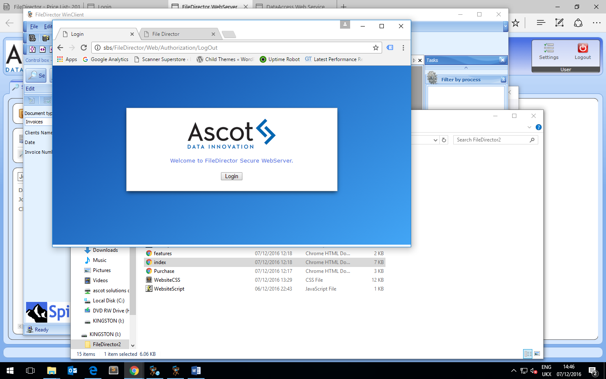

<div id="productInfo" class="content-width-wrap">
    <div id="productTitle">
        <h2>Web Access to FileDirector</h2>
        <div>

            <h4>Connect to FileDirector and Your Documents From Anywhere</h4>
            <br>
            <p>
                WebClient – World-Wide included WebClient allows you to use practically all the advantages of fileDirector — wherever you happen to be. Using a web browser, you can access documents and thus, for example, take part in approval processes. </p><br>
            <p>A unique feature is that you can even send locally-scanned documents to fileDirector installed back at base — so the documents can be processed on there. </p>
            <br>
            <div class="content-img">
                
            </div>

        </div>
